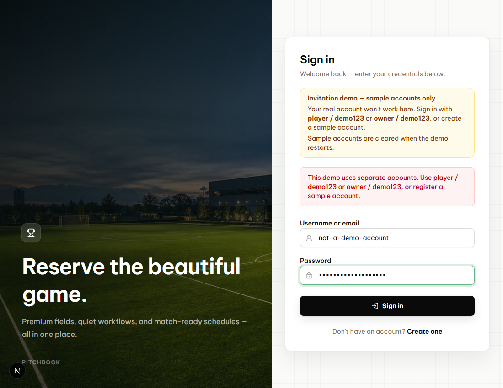
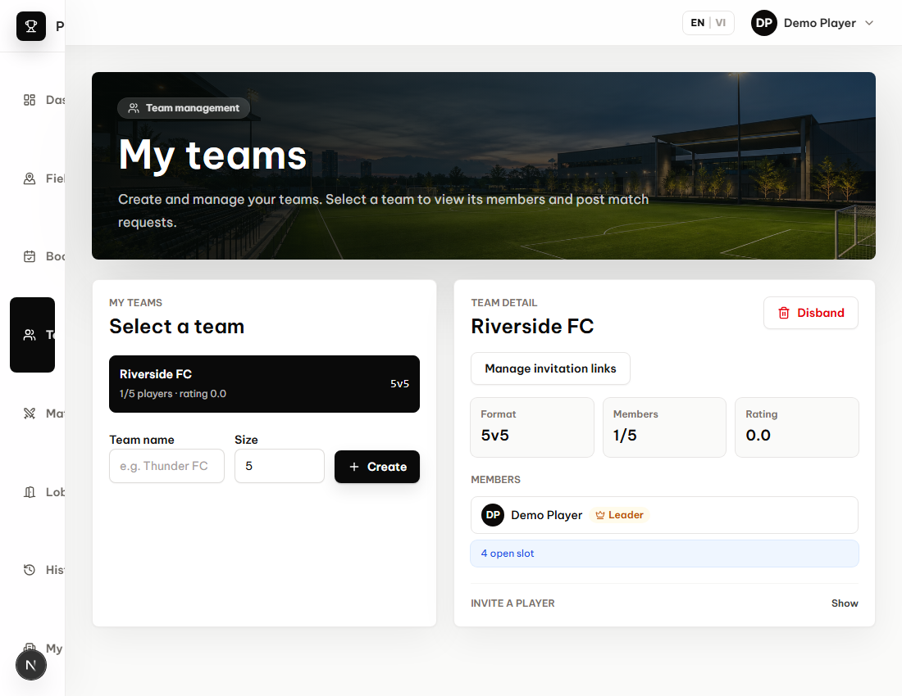

PitchBook invitation demo
Recorded from the actual app with isolated sample data. No remote database changes.
A non-demo account is rejected with an explanation and sample sign-in details.
player / demo123 signs in successfully and opens My teams.
owner / demo123 signs in successfully and opens My teams.